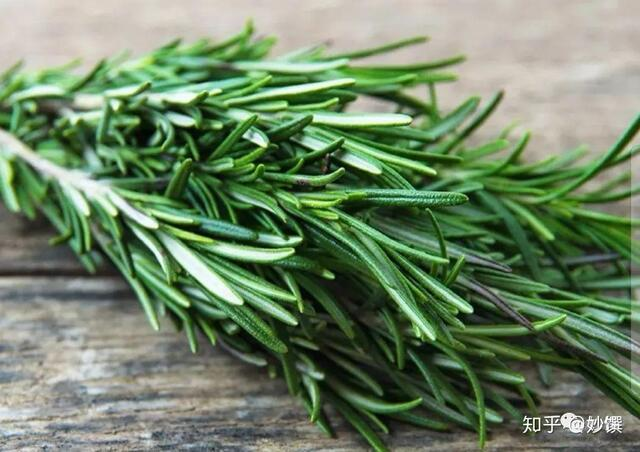
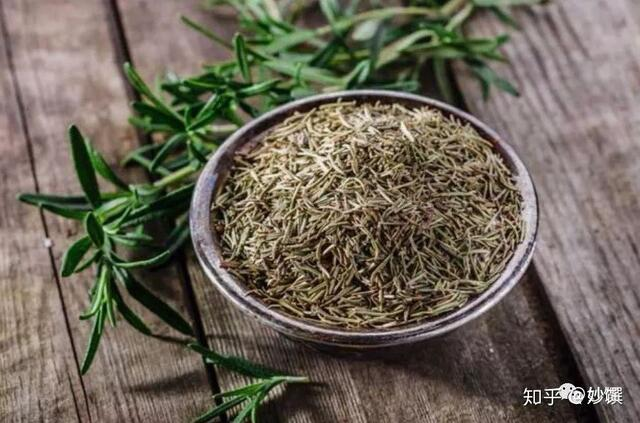
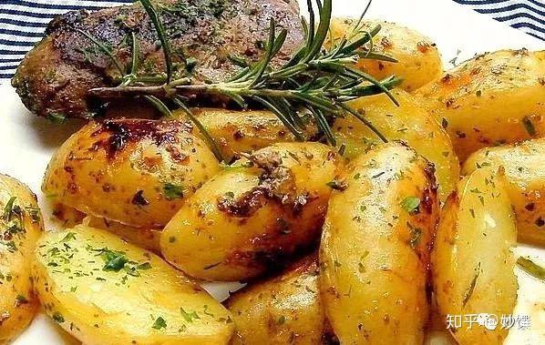
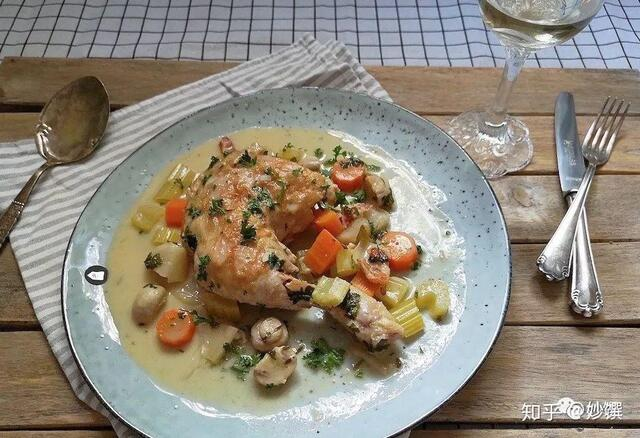
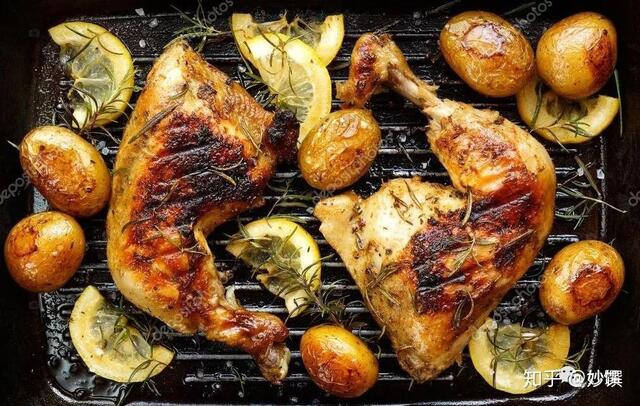

迷迭香的香味特别，轻搓近闻很浓郁，有一种独特的松木香，但掺杂了一丝苦。西餐烤肉烤鸡等硬菜常会用到它，去腥增香。要酌量用，不是老司机你一定hold不住。

▲新鲜迷迭香，图源自网络。

▲ 干迷迭香，图源自网络。
气味：香味浓郁，带有松木香，甜中微苦，气味强势，烹调中酌量用。
回顾：
coffee cat的晚餐：迷迭香烤脆皮土豆

▲ 醇厚的香气和厚实的土豆很搭
coffee cat的晚餐：法式白酒炖鸡，有迷迭香和别的香草。

▲ 之后会上这个食谱
应用：肉类鱼类和蔬菜的烹调，包括烩煮和烤制；法式煎羊排；烤土豆；做意式扁平类香料面包。

▲ 迷迭香柠檬烤鸡腿，图源自网络。